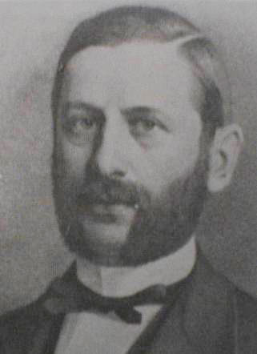

|  |
Edinger-Westphal nucleus = The parasympathetic (accessory) nucleus of the 3rd oculomotor nerve. .
Karl Friedrich Otto Westphal Westphal was the son of Karl Friedrich Otto Westphal (1800-1879), a prominent physician and Geheimer Sanitätsrath (privy medical counsellor). From 1851 he studied in Berlin, Heidelberg and Zurich and received his doctorate following an educational journey to Vienna and Paris.
In 1857 Westphal became assistant in the smallpox section of the Berlin Charité. One year later, 1858, he moved to the department for the mentally ill, working as an assistant physician with Wilhelm Griesinger (1817-1868), Wilhelm von Horn (1803-1871), and Karl Wilhelm Ideler (1795-1860). In 1861 he was habilitated as Privatdozent of psychiatry at the Berlin University.
In 1868 Westphal became leader of the smallpox department as well as that of internal medicine. One year later, 1869, he was appointed professor extraordinary of psychiatry, head physician and clinical teacher in the department for mental and nervous diseases, and in 1874 full professor of psychiatry.
Westphal was a member of several societies, among them the scientific deputation for the health system (Deputation für das Medicinalwesen). He was Geheimer Medicinalrath (privy medical counsellor), and was active as a journalist.
Westphal distinguished himself in his no-restraint approach to the care of the mentally ill.
Westphal’s written work to a large degree concerns the diseases of the spinal cord and neuropathology. His papers appeared mainly in the Allgemeine Zeitschrift für Psychiatrie, [Virchows] Archiv für pathologische Anatomie und Physiologie und für klinische Medizin, Berliner klinische Wochenschrift, Charité-Annalen, and the Vierteljahrsschrift für gerichtliche Medicin, but mostly in the Archiv für Psychiatrie und Nervenkrankheiten, of which he was editor from 1868.
He made many contributions, in particular identification of pseudosclerosis, demonstrated the relationship of general paralysis of the insane with tabes dorsalis, described periodic paralysis and first described agoraphobia (fear of open places). In 1887, two years after Ludwig Edinger had demonstrated it in the foetus, Westphal described the accessory nucleus of the 3rd oculomotor nerve in the adult. Together with Wilhelm Heinirich Erb he was the first to describe the deep tendon reflex.
He trained a number of world famous neurologists, including Arnold Pick (1851-1924) and Hermann Oppenheim (1858-1919), and Carl Wernicke (1848-1905) was his assistant.
His son was the neurologist and psychiatrist Alexander Karl Otto Westphal (1863-1941), who is eponymously associated with the Westphal-Piltz syndrome, which is a neurotonic pupillary reaction.
Bibliography:
Die Agoraphobie, eine neuropathische Erscheinung.
Archiv für Psychiatrie und Nervenkrankheiten, Berlin, 1871-72; 3: 138-161.
Künstliche Erzeugung von Epilepsie bei Meerschweinchen.
Affection des Nervensystems nach Pocken und Typhus.
Ueber einige durch mechanische Einwirkung auf Sehnen und Muskeln hervorgebrachte Bewegungs-Erscheinungen (Knie-, Fussphänomen).
Archiv für Psychiatrie und Nervenkrankheiten, Berlin, 1875,5: 803-834.
Eigentümliche mit Einschlafen verbundene Anfälle.
Archiv für Psychiatrie und Nervenkrankheiten, Berlin, 1877; 7: 631-635. Westphal-Leyden ataxia.
Ueber combinirte (primäre) Erkrankung der Rückenmarkstränge.
Archiv für Psychiatrie und Nervenkrankheiten, Berlin.
Also appeared separately in Berlin, 1879.
Ueber eine Art paradoxer Muskelcontraction.
Ueber Verschwinden und Localisation des Kniephänomens.
Ueber primäre Erkrankung der Seitenstrangbahnen.
Über eine dem Bilde der cerebrospinalen grauen Degeneration ähnliche Erkrankung des centralen Nervensystems ohne anatomischen Befund, nebst einigen Bemerkungen über paradoxe Contraction.
Archiv für Psychiatrie und Nervenkrankheiten, 1883, 14: 87-134.
Westphal’s phenomenon II, and Westphal-Strümpell pseudosclerosis.
Über einen merkwürdigen Fall von periodischer Lähmung aller vier Extremitäten mit gleichzeitigem Erlöschen der elektrischen Erregbarkeit während der Lähmung.
Berliner Klinische Wochenschrift, 1885,22: 489-491, 509-511.
Westphal’s syndrome.
Ueber die chronische progressive Lähmung der Augenmuskeln. Berlin, 1891.
Psychiatrische Abhandlungen. Berlin, A. Hirschwald, 1892.
This is volume 1 of his Gesammelte Abhandlungen.
Gesammelte Abhandlungen. 2 volumes. Berlin, 1892.
Published by his son Alexander Karl Otto Westphal (1863-1941),
Die Agoraphopbie, eine neuropathische Erscheinung.
Archiv für Psychiatrie und Nervenkrankheiten, Berlin, 1871-1872, 3: 138-161.Biographical, etc:
Karl Moeli (1849-1919):
Zur Erinnerung an Karl Westphal. Berlin, 1890.
Theodor Kirchhoff (1853-1922), publisher:
Deutsche Irrenärzte.
2 volumes, Berlin, 1921-1924. Volume 2: 110-121.Die naturwissenschaftlichen und medicinischen Staatsanstalten Berlins.
Festschrift für die 59. Versammlung deutscher Naturforscher und Aerzte. Berlin, 1886, page 378.
Deutsche Medizinische Wochenschrift, Berlin, 1890, page 205 (Otto Ludwig Binswanger). Allgemeine deutsche Biographie, 42, page 204.
Archiv für Psychiatrie und Nervenkrankheiten, Berlin, 1890, 21: 1-22 (Ernst Siemerling).